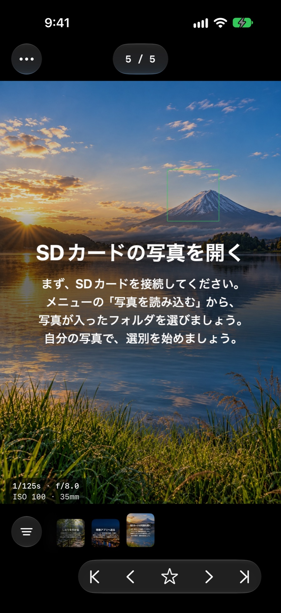
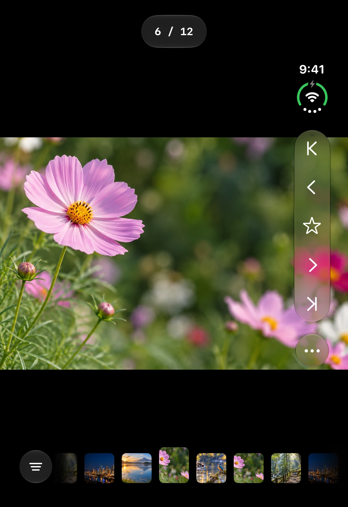
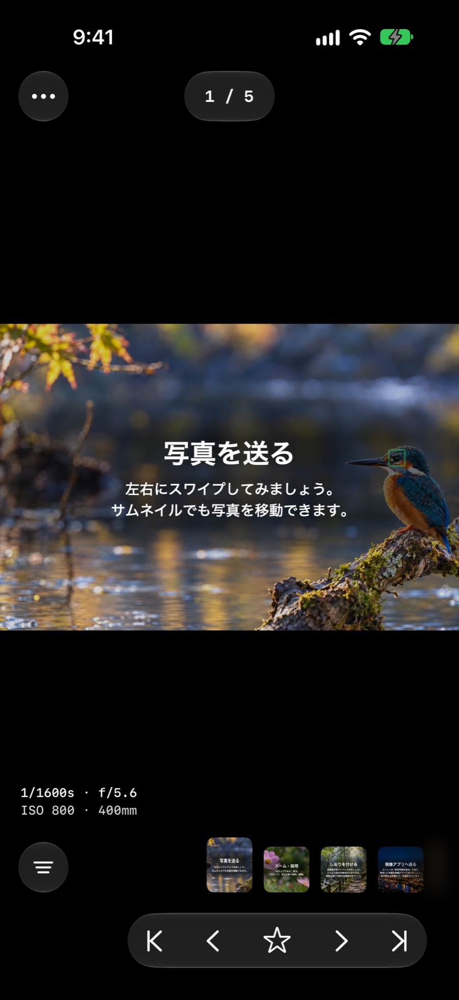
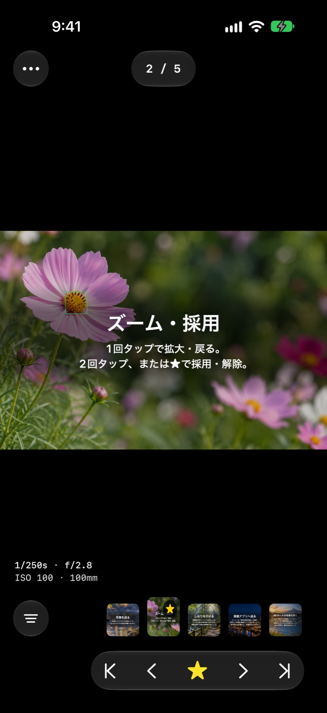
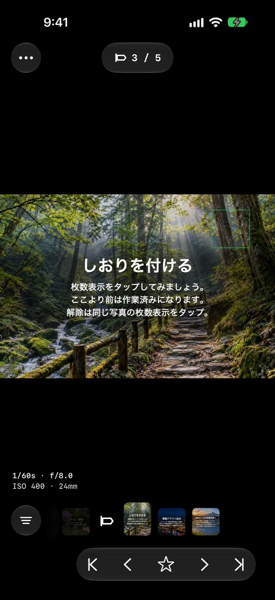
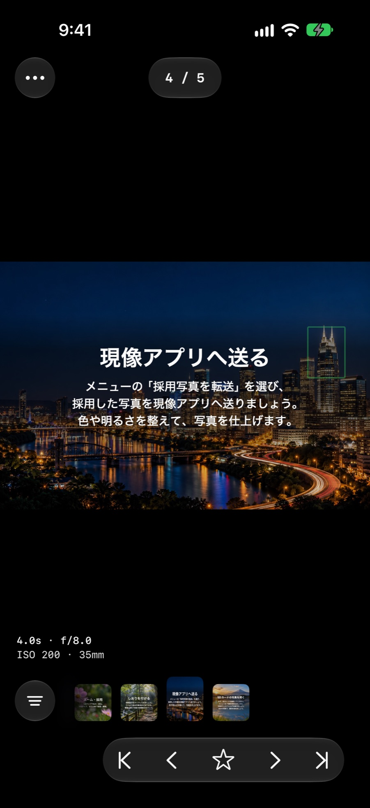

SDカードから、すぐ選別。
SDカードリーダーや外付けSSD、端末内のフォルダを選ぶだけ。コピーを待たずに閲覧を始められます。RAW＋JPEGの同時記録は自動で1枚にまとめて表示します。

SDカードや外付けSSDの写真をテンポよく見比べて、残したい一枚を選べます。家に帰ってPCを開くまで、待たなくていい。
閉じたまま片手で素早く。開けば大きな画面で1枚ずつじっくり。iPhone Duo のどの姿勢でも使いやすいように作り込みました。

移動中でも片手で、テンポよく選別。
大きな画面で、細部のピントまで確認。
開き具合を調整して、手になじむ角度で写真を選べます。
ほかのアプリと並べて使える。
iPad では、写真を送りながら AF 枠まで余裕をもって確認できます。撮影旅行の夜、宿で一日分をまとめて振り返るのにも向いています。

電車でも、カフェでも、撮影地でも。PCを広げられない時間が、そのまま選別の時間になります。
SDカードリーダーや外付けSSD、端末内のフォルダを選ぶだけ。コピーを待たずに閲覧を始められます。RAW＋JPEGの同時記録は自動で1枚にまとめて表示します。

左右のスワイプやフィルムストリップで1枚ずつ送ります。シャッタースピード・絞り・ISOといった撮影情報とAF枠を見ながら選べます。

1回タップで拡大、2回タップか★で採用します。瞳に寄ったまま前後の連写をスワイプで見比べられるので、ピントが来ている1枚がすぐ分かります。

枚数表示をタップすると、そこにしおりを挟めます。どこまで選んだかを覚えているので、次の移動時間に続きから再開できます。

採用した写真だけを共有メニューから現像アプリやファイル管理アプリなどへ渡せます。選別の結果は標準の .xmp ファイルとして残るので、PCの現像ソフトでも引き継げます。

RAW・連写・AF枠。カメラが記録した情報を読み取り、ベストショットを見極める手がかりにします。
Sony α が記録した MakerNote から AF エリアを読み取り、写真に重ねて表示します。瞳に合っているか、拡大する前に見当がつきます。
高速連写のカットを自動でグループ化。フィルムストリップで区切りがひと目で分かり、グループ間のジャンプも1コマずつの比較もできます。
採用の印は、同じフォルダの標準 .xmp サイドカーに保存します。
SDカードや外付けSSDの写真を、取り込まずにその場で直接表示します。
採用した写真だけを絞り込み、共有メニューから対応するアプリへ渡せます。
読み込み・解析・保存はすべて端末内で完結。写真や情報が外部のサーバーに送られることはありません。
ありません。採用の印は、元のファイルと同じフォルダにある標準の .xmp サイドカーファイル（xmp:Rating）に書き込みます。RAW や JPEG そのものは変更しません。
JPEG写真はメーカーを問わず読み込み対象です。RAWは Sony の .ARW に対応しています。AF枠表示と連写グループ化は、対応する Sony α の撮影情報がある写真で利用できます。
はい。初回起動時にサンプル写真のチュートリアルが始まり、写真送り・ズーム・採用・しおり・現像アプリへの転送までひととおり体験できます。
ありません。写真の読み込みや解析はすべて端末内で行い、外部サーバーへは送信しません。詳しくはプライバシーポリシーをご覧ください。